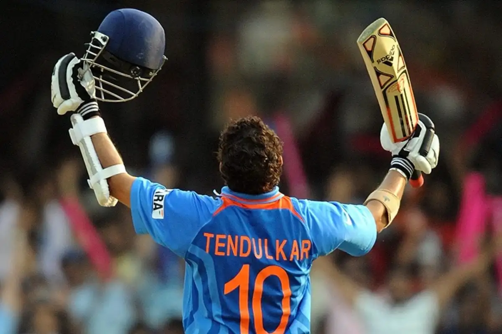
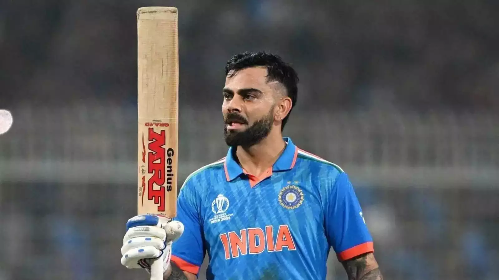
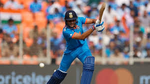
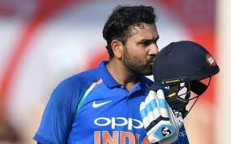
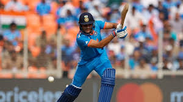
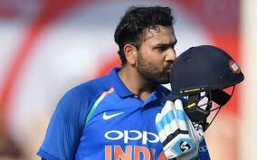
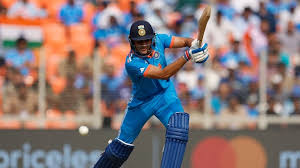
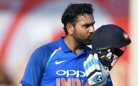

Cricketers Photos
"On the green field, they stand tall, passion in their eyes aglow, With bat and ball, they weave tales of triumph and woe. Cricketers, modern-day warriors, with every match they bestow."



 




